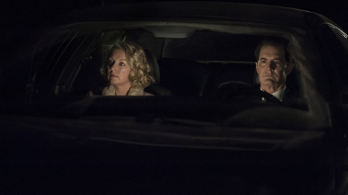

David Lynch and Mark Frost's masterpiece concludes with an utterly uncompromising final chapter.

It ended with a scream, and a million questions, only one of which really matters: How could it have ended any other way?
The two-part finale of Twin Peaks' long-awaited third season/reboot/revival/"Return" marks the conclusion of the most elaborate bait-and-switch in television history. For 18 episodes, co-creators David Lynch and Mark Frost deftly played on a quarter century of audience hopes, fears and great expectations created by the show's two original seasons, a prequel film and a host of fake dossiers and diaries. We wanted to see lost loves reunited, losers redeemed, villains vanquished. We wanted a reckoning with the dark forces of the Black Lodge – demons and doppelgangers and the apparent prime mover of it all, oddly named "Judy." Audrey Horne must be sprung from her purgatorial limbo. The good Dale Cooper must defeat his shadow self. Laura Palmer should have peace at last.
And for a while, at least, it seemed that's where we were headed. The bulk of the first hour is a crackerjack supernatural thriller in the vein of the originl finale that trapped Coop in the Lodge all those years ago. As the agent and his unlikely allies race toward Twin Peaks, Dale is outrun by his doppelganger, who uses the coordinates gleaned from the late Major Briggs (reappearing as a disembodied, floating head, because of course) to alley-oop himself right into the Sheriff's Department parking lot. As the black-eyed phony ingratiates himself with Deputy Andy, Sheriff Frank Truman and the rest of the force, crooked cop Chad Broxford attempts a jailbreak. Meanwhile the eyeless woman Naido chirps and squawks like an alarm triggered by the evil entity's presence.
Then the station's receptionist Lucy blows the fake Coop away after receiving a phone call from the real deal, and Freddie, the superpowered Brit, bashes his cell door right into Chad's face. The whole gang then assemble in the Sheriff's office to watch the young Englishman do battle with a black orb imbued with the power – and visage – of Bob, the maniacal demon responsible for Laura's rape and murder years ago. When the entity's power is shattered, Naido transforms into Diane — the real Diane this time, Cooper's one-time executive assistant and love interest, now with a shock of fire-engine red hair.
As lights flicker and fade, Cooper, Diane, and Gordon Cole warp into the bowels of Benjamin Horne's Great Northern Hotel, where Dale uses his hotel key to unlock an unmarked door and return to the other side. He's joined by Mike, the One-Armed Man, whose recitation of the "Fire … walk with me" poem surely sent a chill up every Peaks freak's spine. The white knight and his guide commune with the spirit of Phillip Jeffries, his FBI antecedent, enabling him to witness the last night of Laura's life. But between her tearful goodbye to James and her rendez-vous with fate, our hero intercedes, taking her by the hand and leading her right out of the timestream.
We flash back to her body, wrapped in plastic on the shore … but it flickers then disappears from view. When the episode shows us the first few minutes of show's premiere — Josie Packard putting on her makeup, Pete Martell telling his wife Catherine he's going fishing — it's a perfectly normal morning, not a corpse in sight. It seems like Coop has succeeded in sparing Laura from her fate. Until we cut to the present-day Palmer home, where we hear an ungodly wailing from her mother Sarah, who suddenly lurches into the frame, throws her daughter's photo to the floor and stabs it repeatedly with a bottle of booze. The girl herself then vanishes from Cooper's grasp.
That's when it cuts to Episode 18. And that's when it all goes wrong.
Yes, there's one last moment of success for our hero, when Cooper's tulpa reunites with Janey-E and Sonny Jim to live out the rest of his days as Dougie Jones in peace and harmony. But when the actual Dale passes through the Lodge, he's reliving many of the same events and exchanges he had during the first few episodes. He winds up in a car with Diane, the two of them willingly passing through some unseen border in the desert. Day turns to night. Coop, acting equal parts like his own noble self and his cold, calculating doppelganger, has sex with his companion in a seedy motel. Laura Dern, by the way, is an absolute marvel in this sequence – her face is a canvas of love and pain, her hands distorting then covering her lover's face to avoid seeing what's there.
The next morning, she's gone, leaving behind a Dear John note addressed to "Richard" from "Linda" – the names that the Giant/Fireman warned Cooper about in the season's first scene. The Fed finds himself in a town called Odessa, where he roughs up a few local tough guys and grabs the address of a diner waitress on a hunch. That waitress turns out to be Laura Palmer ... or so he thinks. As far as she knows, her name is Carrie Page; having apparently just murdered some dude in her living room, she's eager to get out of town. Dale says he'll take her to "Twin Peaks, Washington" ("D.C.?" "State"), presumably to confront her mother – who we've been led to believe has been possessed by Judy, the mother of all evils. The same Judy, in fact, of the Blue Rose project headed by Gordon Cole and Garland Briggs, in fact. Everything's going to be tied up nicely now.
Then, after an interminable night drive, Coop and "Carrie" arrive at the Palmers' house. Only Sarah's not at home. The current resident is one Alice Tremond, who bought the house from a Mrs. Chalfont, who purchased it from persons unknown. Dale seems to recognize those names, and if you're a Peaks die-hard, you will too – they're monikers utilized by a Lodge spirit who appeared as an old woman in the original seasons and Fire Walk With Me.
Defeated, the two turn to leave, until Cooper stops in the middle of the street and turns back to face the house. "What year is it?" he asks, seemingly bewildered. "Carrie" doesn't answer. She turns and looks as well.
A distorted voice calls, "Laura?"
She screams.
The lights go out.
And as the image of Laura whispering into Cooper's ear in the Lodge so long ago plays in slow motion, the credits roll.
So ends the con job that Lynch and Frost telegraphed from the season's subtitle, The Return, on down. After all, the original Twin Peaks ended in the worst possible way: goodness corrupted, evil triumphant. Fire Walk With Me hinted at a way forward, only to linger on cruelty and suffering. Certainly nothing in Lynch's intervening filmography indicated that this story would have a happy ending. Why wouldn't we wind up right back where we started: an unspeakable violation, carving a hole in the moral fabric of the universe that no one, not even the whitest of knights, is capable of making whole?
This is Twin Peaks: The Return, alright. A return to pain that can't be healed, crimes that can't be solved, wrongs that can't be righted. We drank full. We descended. There's no way up and out again.